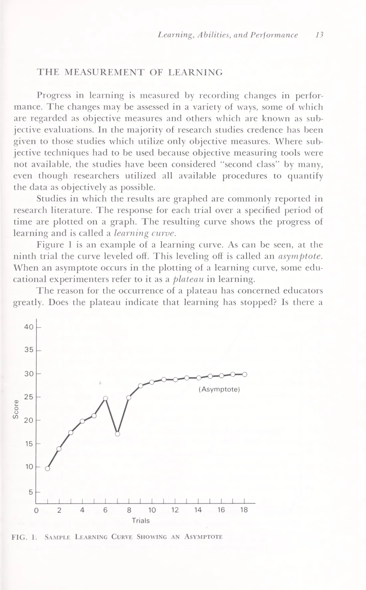

Chương 2: Học tập, Năng lực và Hiệu suất
Thuật ngữ học tập (learning), dù được sử dụng phổ biến, lại là một từ phức tạp với nhiều hàm ý sâu rộng. Người nghiên cứu về tiếp nhận kỹ năng (skill acquisition) phải xem xét nhiều khía cạnh của kỹ năng và các yếu tố liên quan đến việc học kỹ năng trước khi có thể bắt đầu hiểu được quá trình này và diễn giải các kết quả.
Kỹ năng là thứ được học. Phần lớn những gì chúng ta biết về học tập đều được ngoại suy từ các nghiên cứu trên động vật bậc thấp. Quá trình học tập của con người khác với quá trình học tập của động vật. Việc rút ra kết luận về các đặc điểm hành vi của con người từ kiến thức thu được qua các nghiên cứu trên động vật có thể gây nguy hiểm và sai lệch. Mối quan tâm của chúng ta ở đây là việc học tập như một chức năng của con người.
Con người khác nhau về năng lực học tập. Những khác biệt cá nhân này là một yếu tố cân nhắc thiết yếu trong toàn bộ môi trường học tập. Không phải tất cả các cá nhân đều bắt đầu việc học ở cùng một vị trí trên dải liên tục của kỹ năng, và tốc độ tiến bộ của họ cũng khác nhau tương ứng.
Học tập bao hàm một phạm vi hành vi rộng lớn, và cách duy nhất để chúng ta chắc chắn rằng việc học đã diễn ra là quan sát và/hoặc đo lường sự thay đổi trong hành vi. Sự thay đổi trong hành vi này được phản ánh qua sự thay đổi trong hiệu suất (performance). Tuy nhiên, một sự thay đổi trong hiệu suất không phải lúc nào cũng chỉ ra rằng việc học đã diễn ra. Một màn trình diễn xuất sắc có thể xảy ra một lần và không bao giờ lặp lại được nữa. Học tập hàm ý một sự thay đổi trong hành vi mang tính tương đối bền vững. Do đó, chúng ta đo lường sự lưu giữ (retention) của một hành vi nhất định.
Trong khi một số biến số có tác động chủ yếu đến việc học kỹ năng, những biến số khác lại ảnh hưởng đến hiệu suất vận động (motor performance). Sự phân biệt giữa các thuật ngữ học tập kỹ năng (skill learning) và hiệu suất vận động là cần thiết để hiểu thấu đáo về quá trình tiếp nhận kỹ năng.
Hiệu suất vận động và Học tập kỹ năng
Thuật ngữ vận động (motor), khi dùng chung với thuật ngữ hiệu suất (performance), hàm ý một hành động của cơ quan thực thi (effector action), một hành động thể chất, hoặc một hành động đòi hỏi sử dụng các nhóm cơ lớn. Hiệu suất có thể mang tính chất tạm thời, và thuật ngữ hiệu suất vận động đề cập đến một hành động thực thi có thể chưa được "cố định" lâu dài trong kho tàng chuyển động của một cá nhân.
Thuật ngữ kỹ năng (skill), khi dùng chung với thuật ngữ học tập (learning), hàm ý sự tái tổ chức các mẫu chuyển động cơ bản dẫn đến một sự thay đổi bền vững trong hành vi thực thi. Học tập kỹ năng đề cập đến một sự thay đổi trong hành vi thực thi xảy ra do kết quả của việc luyện tập. Sự thay đổi hành vi thu được sẽ tiếp tục thể hiện rõ qua mỗi lần lặp lại kỹ năng, và do đó, mang tính nhất quán và tương đối bền vững.
Việc thực hiện một nhiệm vụ đòi hỏi kỹ năng có thể bị biến đổi bởi một số biến số học tập nhất định. Trong số các biến số ảnh hưởng chủ yếu đến việc học kỹ năng có phản hồi (feedback), sự lưu giữ (retention), lịch trình luyện tập và chuyển giao học tập (transfer). Hiệu suất vận động bị ảnh hưởng bởi các biến số khác, chẳng hạn như các yếu tố cơ thể, sự trưởng thành hoặc thoái hóa, yêu cầu của nhiệm vụ và các yếu tố động cơ thúc đẩy. Mỗi yếu tố này đều có thể ảnh hưởng lớn đến hiệu suất của một người khi thực hiện nhiệm vụ.
Đôi khi rất khó để phân biệt các biến số học tập với các biến số hiệu suất. Các biến số gây ra một sự thay đổi tạm thời trong hành vi không thể được quy cho việc học. Quá trình học diễn ra liên tục trong một khoảng thời gian dài và có thể biểu hiện ra bên ngoài rất chậm. Nhìn bề ngoài, có vẻ như một cá nhân học được rất ít, trong khi thực tế, sự cải thiện đang diễn ra dần dần. Toàn bộ hiệu suất của cá nhân phải được xem xét trước khi xác định xem người đó đã học được bao nhiêu. Sự phân biệt giữa các biến số học tập và biến số hiệu suất giúp giáo viên cải thiện cấu trúc của môi trường học tập và nhận thức được điều gì đang xảy ra với học sinh. Các phương pháp giảng dạy, cũng như các kỹ thuật đánh giá, có thể được xác định một cách sáng suốt hơn nhờ sự hiểu biết về các thuật ngữ học tập kỹ năng và hiệu suất vận động.
Các mô tả và ví dụ sau đây về các biến số hiệu suất và sự thay đổi hành vi sẽ giúp làm rõ sự phân biệt giữa các thuật ngữ học tập kỹ năng và hiệu suất vận động.
Các biến số cơ thể (Organismic Variables)
Các biến số cơ thể liên quan đến hoạt động chức năng thể chất của một cá nhân. Sự gia tăng sức bền tim mạch, độ dẻo dai hoặc sức mạnh là những biến số cơ thể ảnh hưởng đến hiệu suất. Một người biểu diễn bước vào quá trình tập luyện có thể thay đổi chức năng thể chất của mình và nhờ đó cải thiện hiệu suất. Tương tự như vậy, cá nhân nào để bản thân mất phong độ thể lực sẽ thấy hiệu suất của mình suy giảm nhanh chóng.
Giả sử một học sinh muốn ném một quả bóng đi xa nhất có thể. Em ấy biết mẫu động tác ném cơ bản, nhưng muốn tăng khoảng cách ném bóng. Em có thể đạt được mục tiêu bằng cách tăng sức mạnh cánh tay và vai hoặc bằng cách tái tổ chức mẫu động tác ném của mình. Nếu khoảng cách ném tăng lên nhờ sự gia tăng sức mạnh, sự cải thiện đó là do một biến số cơ thể. Ngược lại, nếu sự gia tăng đó là do một sự thay đổi nào đó trong mẫu chuyển động cơ bản, nó có thể được quy cho việc học kỹ năng.
Theo lập luận trên, việc tăng khoảng cách ném bóng có thể là hoặc không phải là kết quả của việc học. Trong trường hợp này, người ném trước tiên phải tăng độ dẻo dai để mở rộng biên độ chuyển động (biến số cơ thể); sau đó người đó phải học một mẫu ném khác để tận dụng sự gia tăng về biên độ và độ dẻo dai đó. Như vậy, người đó vừa cải thiện được hiệu suất vừa đã học được kỹ năng.
Nếu một cá nhân thay đổi khoảng cách ném bóng nhờ sự gia tăng kiến thức, chẳng hạn người đó học được cách thả bóng ở góc 45° để tăng khoảng cách, sự thay đổi này có thể được quy cho việc học. Một người có thể biết góc thả bóng tốt nhất là 45°, nhưng nếu không thể thả bóng chính xác ở góc đó, thì không có bằng chứng nào cho thấy người đó biết hay đã học được nguyên lý này, trừ khi một bài kiểm tra viết được đưa ra.
Nhà giáo dục thể chất coi thể lực là mục tiêu chính của giáo dục thể chất và giáo viên đặt trọng tâm lớn vào việc cải thiện hiệu suất đặc biệt quan tâm đến các biến số cơ thể. Cá nhân có thể trạng kém do bệnh tật hoặc lười vận động không thể cải thiện nhanh chóng trong khoảng thời gian dành cho các học phần thể thao. Kiểu người này gặp bất lợi so với người có thể chất khỏe mạnh và sẽ cần khoảng thời gian luyện tập dài hơn. Theo quy luật chung, người có kỹ năng cao và thể lực tốt có thể thực hiện tốt mà cần ít luyện tập — một viễn cảnh rất dễ gây nản lòng cho học sinh thiếu kinh nghiệm, kỹ năng hoặc thể lực, nhưng vẫn phải bị so sánh với những học sinh có kỹ năng tốt.
Trưởng thành và Thoái hóa (Maturation and Degeneration)
Khi một đứa trẻ trưởng thành, trẻ có được khả năng sử dụng các hệ thống cơ bắp khác nhau vốn ảnh hưởng đến hiệu suất của mình. Trẻ không thể thực hiện nhiều chuyển động đòi hỏi kỹ năng cho đến khi trưởng thành đầy đủ. Một đứa trẻ không thể đi xe đạp cho đến khi chân đủ dài để chạm tới bàn đạp. Trẻ không thể bắt bóng cho đến khi sự phối hợp tay-mắt phát triển. Các nguyên lý về tăng trưởng và phát triển rất quan trọng trong việc hiểu những thay đổi về hiệu suất. Tầm quan trọng của những trải nghiệm sớm với các mẫu chuyển động nhằm chuẩn bị cho trẻ học các kỹ năng là điều không thể nhấn mạnh đủ.
Vượt qua một độ tuổi nhất định, hiệu suất nhìn chung sẽ suy giảm. Trong một số trường hợp, sự thay đổi hiệu suất này có thể liên quan trực tiếp đến sự thay đổi trong tình trạng cơ thể của cá nhân. Như vậy, biến số thoái hóa, cũng như các biến số tăng trưởng và phát triển, có liên quan trực tiếp đến hiệu suất vận động.
Yêu cầu của nhiệm vụ (Task Requirements)
Các yêu cầu cụ thể của một nhiệm vụ nhất định ảnh hưởng đến hiệu suất thực hiện nhiệm vụ đó. Loại dụng cụ mà người thực hiện sử dụng, những giới hạn do luật lệ đặt ra, và các điều kiện thi đấu — bao gồm thời tiết, khán giả và trọng tài — là những ví dụ về yêu cầu nhiệm vụ có ảnh hưởng đến việc thực hiện một kỹ năng.
Có vô số ví dụ về ảnh hưởng của dụng cụ đối với các yêu cầu thực hiện nhiệm vụ. Dụng cụ không vừa vặn, ở trong tình trạng mất an toàn, không phù hợp về trọng lượng, v.v., đều cản trở hiệu suất tốt. Dụng cụ hiện đại được cải tiến đã mang lại những tác động tích cực. Những kỷ lục nhảy sào mới được thiết lập nhờ việc sử dụng sào sợi thủy tinh phản ánh những thay đổi trong yêu cầu nhiệm vụ. Trong môn trượt tuyết, vật liệu kim loại hoặc sợi thủy tinh dùng để chế tạo ván trượt, việc bổ sung cạnh thép vào ván trượt gỗ, việc ép lớp gỗ và kim loại, cùng sự biến đổi về chiều dài, trọng lượng và độ uốn dẻo đều đòi hỏi sự thay đổi trong hiệu suất thực hiện.
Tầm quan trọng không kém là những thay đổi do luật lệ và điều kiện thi đấu áp đặt. Các vận động viên vốn quen thuộc với luật bóng rổ đại học đã thi đấu khác đi khi họ tranh tài ở các giải đấu quốc tế theo luật quốc tế. Các nữ vận động viên điền kinh phải điều chỉnh hiệu suất của mình khi cự ly chạy ở các nội dung khác nhau bị thay đổi. Hãy tưởng tượng hiệu suất sẽ phải thay đổi thế nào nếu bảng rổ được nâng lên độ cao mười hai feet so với mặt sàn hoặc lưới quần vợt cao bốn feet thay vì chiều cao hiện tại!
Bất kỳ sự thay đổi hiệu suất nào như vậy đều được quy cho sự thay đổi trong yêu cầu nhiệm vụ. Tuy nhiên, một người chuyển từ loại dụng cụ hoặc điều kiện này sang loại khác, chẳng hạn từ ván trượt gỗ sang ván trượt kim loại, sẽ thực hiện những điều chỉnh trong mẫu chuyển động của mình mang tính tương đối bền vững. Theo nghĩa này, sự thay đổi như vậy có thể được quy cho việc học, nhưng sự thay đổi chính vẫn là do sự thay đổi ở biến số hiệu suất.
Các yếu tố động cơ thúc đẩy (Motivational Factors)
Động cơ hay khát khao là một điều kiện tiên quyết sống còn đối với việc học và hiệu suất. Nếu một người không có động cơ học tập, việc học sẽ không diễn ra; một người không có động cơ sẽ không thể hiện tốt. "Anh ấy có thể đã trở thành nhà vô địch nếu muốn, nhưng anh ấy không đủ 'khao khát'" hay "họ là đội 'cửa dưới' bước vào giải đấu và thực sự muốn giành chiến thắng" là những câu nói phản ánh khả năng của con người trong việc đáp ứng thử thách gia tăng và vượt trội lên khi có khát khao. Vô số kỷ lục đã bị phá vỡ và những cột mốc mới được thiết lập nhờ khát khao vươn tới đỉnh cao mãnh liệt của con người. Nhiều lần một cá nhân đã phá kỷ lục bằng một màn trình diễn ngoạn mục mà sau đó anh ta không thể lặp lại được nữa. Các huấn luyện viên nhận ra rằng khát khao hay động cơ có thể giúp một người có kỹ năng trung bình trở nên xuất sắc. Do đó, động cơ ảnh hưởng đến cả hiệu suất vận động tức thời lẫn quá trình học tập bền vững hơn. (Động cơ như một yếu tố ảnh hưởng đến việc học kỹ năng được thảo luận trong Chương 6.)
Các loại hình học tập
Theo truyền thống, học tập được chia thành ba phạm trù: (1) học tập nhận thức (cognitive learning), (2) học tập tình cảm – thái độ (affective learning), và (3) học tập thực thi (effective learning). Mặc dù mỗi phạm trù có thể được phân biệt bởi loại hình học tập đạt được hoặc lĩnh vực chịu ảnh hưởng nhiều nhất, quá trình nền tảng cho tất cả các loại hình học tập dường như là giống nhau. Quan điểm này đã được Bilodeau và Bilodeau (1961) bày tỏ trong bản tổng kết các nghiên cứu về học tập kỹ năng vận động của họ. Họ sử dụng thuật ngữ học tập kỹ năng vận động để thuận tiện cho việc phân loại nghiên cứu chứ không có ý rằng học tập kỹ năng vận động khác với các loại hình học tập khác.
Fitts đã bình luận về quá trình liên quan trong các loại hình học tập khác nhau như sau:
Các quá trình nền tảng cho hiệu suất tri giác – vận động có kỹ năng về cơ bản rất giống với những quá trình nền tảng cho hành vi ngôn ngữ cũng như các quá trình liên quan đến giải quyết vấn đề, hình thành khái niệm, v.v. Nếu vậy, các quy luật học tập cũng phải tương tự nhau... sự phân biệt giữa các quá trình ngôn ngữ và quá trình vận động không phục vụ mục đích đặc biệt nào.1
1 P. M. Fitts, "Perceptual-Motor Skill Learning," Categories of Human Learning, ed. A. W. Melton (New York: Academic Press, 1964), p. 243.
Học tập nhận thức đề cập đến những thay đổi trong hành vi của một người ở các lĩnh vực giải quyết vấn đề, hình thành khái niệm, suy luận và tiếp thu kiến thức thông qua trí nhớ và/hoặc sự thấu hiểu. Học tập nhận thức liên quan đến nhận thức có ý thức và bao gồm các quá trình tâm trí gắn liền với tư duy.
Học tập tình cảm – thái độ áp dụng cho những thay đổi về thái độ. Trong khi thái độ có thể được thay đổi thông qua các sự kiện hoặc kiến thức gắn liền với học tập nhận thức, sự thay đổi hành vi thu được lại liên quan đến cấu trúc giá trị của cá nhân. Vì lý do này, học tập tình cảm – thái độ có lẽ là loại hình khó đạt được nhất ở người trưởng thành.
Học tập tình cảm – thái độ phụ thuộc vào các yếu tố môi trường. Những ảnh hưởng như gia đình, bạn bè và môi trường xung quanh, cả trong quá khứ lẫn hiện tại, rất khó để chống lại, do đó sự thay đổi thái độ diễn ra rất chậm. Thái độ có thể thay đổi ở mọi lứa tuổi, nhưng người ta càng lớn tuổi thì càng ít có khả năng thay đổi thái độ của mình. Khi một người già đi, cần một khoảng thời gian dài hơn và sự tác động liên tục hơn để tạo ra một sự thay đổi thái độ.
Những thay đổi về thái độ là khó đo lường nhất vì người học có thể dễ dàng biểu hiện "hành vi được kỳ vọng" bất kể họ có ý định cư xử như vậy một lần nữa hay không. Các nghiên cứu về thái độ và học tập tình cảm – thái độ nhiều hơn các nghiên cứu về những loại hình học tập khác và nằm trong số những chủ đề phổ biến nhất trong nghiên cứu giáo dục thể chất.
Lĩnh vực học tập thực thi (effective learning) liên quan cụ thể đến đầu ra vận động (motor output) của một cá nhân. Xét về mặt phân loại, việc tiếp nhận kỹ năng thể chất hay học tập vận động được xếp vào loại học tập thực thi. Cũng giống như học tập tình cảm – thái độ gắn liền với học tập nhận thức, học tập thực thi cũng có sự tham gia của học tập nhận thức. Học tập nhận thức và học tập thực thi đều đòi hỏi một hành động thể chất nào đó để chứng minh rằng việc học đã diễn ra. Người học phải nói, viết, di chuyển hoặc thực hiện một hành động thể chất nào đó để truyền đạt những gì mình nghĩ, hiểu, tin tưởng hoặc biết.
Xác định phân loại học tập trong nghiên cứu
Bất kỳ ai theo đuổi việc nghiên cứu về học tập, và cụ thể là học tập kỹ năng, đều phải có khả năng xác định nhãn phân loại phù hợp cho các nghiên cứu về học tập. Việc phân loại chính xác là điều thiết yếu để đưa ra những diễn giải thỏa đáng về nghiên cứu. Biết được một nghiên cứu được thực hiện trong bối cảnh học tập nhận thức, tình cảm – thái độ hay thực thi sẽ mang lại cái nhìn sâu sắc hơn khi diễn giải kết quả nghiên cứu.
Loại hình học tập đang được điều tra có thể được xác định bằng cách nhận diện biến phụ thuộc (dependent variable) trong nghiên cứu. Điều này thường có thể thực hiện được bằng cách đặt câu hỏi: "Phương tiện chính mà nhà thực nghiệm sử dụng để xác định sự thay đổi hành vi là gì?" Khi nghiên cứu tác động của một yếu tố nào đó (gọi là biến thực nghiệm — experimental variable) lên một yếu tố khác (gọi là biến phụ thuộc), điều thiết yếu là phải kiểm soát hoặc giảm thiểu các yếu tố hay biến số khác nhằm loại trừ ảnh hưởng của chúng lên biến phụ thuộc. Chỉ bằng cách này mới có thể xác định được tác động thực sự của biến thực nghiệm. Ví dụ, nếu một nghiên cứu khảo sát tác động của việc luyện tập lên một loại mẫu chuyển động nào đó (biến phụ thuộc), thì nghiên cứu đó liên quan đến học tập thực thi.
Các mẫu chuyển động liên quan có thể là chuyển động vận động tinh (fine motor) hoặc vận động thô (gross motor). Chuyển động vận động tinh bao gồm các điều chỉnh tinh vi và nhỏ trong hành vi như bật công tắc, nhấn nút, hoặc các chuyển động tương tự của bàn tay. Chuyển động lớn hay vận động thô là những chuyển động trong đó cơ thể di chuyển qua không gian và sử dụng các nhóm cơ lớn của cơ thể.
Các nhà giáo dục thể chất có xu hướng phê phán những nghiên cứu về học tập thực thi chỉ sử dụng các chuyển động vận động tinh, trong khi các nhà tâm lý học lại có xu hướng sử dụng các phối hợp vận động tinh trong các nghiên cứu phòng thí nghiệm. Để đánh giá ưu nhược điểm tương đối của việc sử dụng chuyển động vận động thô so với các đáp ứng vận động tinh, cần phải xem xét số lượng biến số tham gia vào nghiên cứu. Bất kỳ yếu tố nào có thể ảnh hưởng đến hiệu suất của một kỹ năng vận động thô đều phải được xác định. Chẳng hạn, sức mạnh có ảnh hưởng quan trọng đến hiệu suất của một kỹ năng vận động thô. Lý do chính cho việc sử dụng các đáp ứng vận động tinh trong nghiên cứu học tập có thể là để loại bỏ ảnh hưởng của sức mạnh lên kết quả nghiên cứu.
Theo quy luật chung, các nghiên cứu mang nhãn "học tập kỹ năng vận động" đòi hỏi đối tượng nghiên cứu thực hiện các nhiệm vụ liên quan đến một loại chuyển động phi ngôn ngữ nào đó. Do vậy, biến phụ thuộc mang bản chất vận động, còn biến độc lập thuộc loại phi ngôn ngữ. Lái máy bay, thao tác với thiết bị lớn, học một kỹ năng thể thao và thực hiện các chuyển động thô là những ví dụ về các nhiệm vụ được sử dụng trong nghiên cứu học tập kỹ năng vận động, tức là lĩnh vực thực thi.
Các nghiên cứu thuộc lĩnh vực tình cảm – thái độ liên quan đến một loại biến phụ thuộc khác; ví dụ: mối quan hệ của một cá nhân với nhóm được đo bằng biểu đồ xã hội (sociogram), phản ứng đối với các kỹ thuật động lực nhóm, hoặc phản hồi đối với các khái niệm như sự trung thực, tinh thần thể thao, hay việc giảng dạy một môn học cụ thể. Ví dụ sau cùng bao gồm các nghiên cứu giáo dục thể chất về thái độ của học sinh đối với môn giáo dục thể chất và phản ứng của các em đối với một loại khóa học hoặc chương trình cụ thể. Hiệu quả của một khóa học thường được đánh giá qua kết quả của những nghiên cứu như vậy.
Lĩnh vực nhận thức bao gồm những nghiên cứu trong đó việc học được đo lường bằng một đáp ứng bằng lời nói hoặc chữ viết cho thấy mức độ, chất lượng, phạm vi hoặc chiều sâu của thành tích trí tuệ. Các bài kiểm tra thành tích khác nhau, bài kiểm tra loại suy, kỳ thi tuyển sinh đại học, v.v., là những công cụ đo lường học tập nhận thức.
Kỹ năng của con người chịu ảnh hưởng bởi thái độ, giá trị và kiến thức cũng như các khả năng thể chất của người đó, nhưng điều quan trọng cần nhớ là quá trình học tập, hay cách thức việc học diễn ra, dường như là giống nhau bất kể loại hình học tập nào.
Đo lường việc học tập
Tiến bộ trong học tập được đo lường bằng cách ghi lại những thay đổi trong hiệu suất. Những thay đổi này có thể được đánh giá theo nhiều cách khác nhau, một số được coi là thước đo khách quan và số khác được gọi là đánh giá chủ quan. Trong đa số các nghiên cứu, sự tin cậy thường được dành cho những nghiên cứu chỉ sử dụng các thước đo khách quan. Khi các kỹ thuật chủ quan buộc phải sử dụng vì chưa có công cụ đo lường khách quan, các nghiên cứu đó thường bị nhiều người coi là "hạng hai", mặc dù các nhà nghiên cứu đã vận dụng mọi quy trình hiện có để lượng hóa dữ liệu một cách khách quan nhất có thể.
Các nghiên cứu có kết quả được biểu diễn bằng đồ thị thường xuyên được báo cáo trong tài liệu nghiên cứu. Đáp ứng của mỗi lần thử (trial) trong một khoảng thời gian xác định được vẽ lên đồ thị. Đường cong thu được cho thấy tiến trình học tập và được gọi là đường cong học tập (learning curve).
Hình 1 là một ví dụ về đường cong học tập. Như có thể thấy, tại lần thử thứ chín, đường cong đã đi ngang. Sự đi ngang này được gọi là đường tiệm cận (asymptote). Khi một đường tiệm cận xuất hiện trong việc vẽ đường cong học tập, một số nhà thực nghiệm giáo dục gọi đó là một giai đoạn chững lại (plateau) trong học tập.

Nguyên nhân dẫn đến sự xuất hiện của giai đoạn chững lại đã khiến các nhà giáo dục hết sức quan tâm. Liệu giai đoạn chững lại có chỉ ra rằng việc học đã dừng lại? Liệu có một giai đoạn "đi ngang" trong mọi loại hình học tập hay đường tiệm cận xuất hiện là do ảnh hưởng của các yếu tố khác? Liệu giai đoạn học tập có kết thúc và ảnh hưởng của các yếu tố khác lại làm cho đường cong hiệu suất tăng lên trở lại không?
Một số nhà giáo dục tin rằng giai đoạn chững lại xảy ra khi động cơ học tập bị suy giảm. Những người khác tin rằng giai đoạn chững lại liên quan trực tiếp đến quá trình học tập và nó hàm ý một sự gián đoạn trong việc học.
Bằng chứng bác bỏ giả thuyết cho rằng các giai đoạn chững lại chỉ ra sự gián đoạn trong học tập đã được Crossman (1959) trình bày. Crossman đã nghiên cứu dữ liệu về những công nhân làm nghề cuốn xì gà trong bảy năm. Hình 2 cho thấy trong suốt khoảng thời gian này, các công nhân tiếp tục cải thiện và tăng số lượng sản phẩm làm ra. Giai đoạn chững lại hay đường tiệm cận như dự đoán đã không xảy ra. Ngay cả sau khi thực hiện cùng một nhiệm vụ cuốn xì gà suốt bảy năm, các công nhân vẫn chưa đạt đến giới hạn năng lực học tập tối đa. Sự đi ngang duy nhất xảy ra là khi máy móc liên quan giới hạn năng suất.

Có thể giả định một cách an toàn rằng các cá nhân hiếm khi đạt đến giới hạn năng lực học tập của họ. Nếu các giai đoạn chững lại thực sự xuất hiện trên đường cong học tập, chúng hẳn phải do các biến số khác ngoài năng lực học tập gây ra. Các biến số này là: (1) động cơ không đầy đủ, (2) sự mệt mỏi, (3) thiếu công cụ đo lường chính xác, hoặc (4) các hạn chế của môi trường.
Bằng chứng do Crossman trình bày (xem Hình 2) gợi ý rằng việc học sẽ tiếp tục trong một khoảng thời gian dài miễn là người học tiếp tục có động cơ. Nếu không có các hạn chế từ môi trường, việc học sẽ tiếp diễn vô thời hạn, có lẽ đến mức năng lực học tập toàn phần của một cá nhân không bao giờ đạt tới giới hạn.
Nhiều người gặp khó khăn khi chấp nhận lập luận này, bởi lẽ rất khó để xác định năng lực của mỗi cá nhân. Chưa ai có thể nghĩ ra cách đo lường chính xác hay thậm chí ước lượng năng lực bẩm sinh của một cá nhân trong việc học tập hoặc thực hiện. Mặc dù thuật ngữ năng lực vận động (motor capacity) xuất hiện trong tài liệu giáo dục thể chất, việc xác định năng lực học các nhiệm vụ vận động và/hoặc thực hiện các kỹ năng vận động của một cá nhân cũng khó khăn tương tự. Chúng ta có thể nghĩ rằng mình biết năng lực sinh lý của con người, nhưng các kỷ lục hiệu suất vẫn bị phá vỡ (chạy một dặm dưới bốn phút và nhảy sào mười bảy feet). Tuy nhiên, trong những kỳ tích như vậy, chính hiệu suất đang được gia tăng. Thuật ngữ năng lực vận động trong một số trường hợp biểu thị sự kết hợp giữa học tập và thực hiện; tức là, năng lực vận động của một cá nhân có thể là năng lực học tập cộng với năng lực sinh lý và thể chất để thực hiện.
Trong nỗ lực tìm ra các phương pháp chính xác để đo lường năng lực học tập, các chuyên gia đã quan tâm đến các quy trình nhằm biến những đánh giá chủ quan trở nên khách quan nhất có thể. Các đánh giá chủ quan là những bước sơ bộ dẫn tới việc phát triển các công cụ đo lường phù hợp. Do đó, việc học cách biểu đạt các đánh giá chủ quan bằng đơn vị số để có thể xử lý thống kê là điều cấp thiết.
Nhiều nhà giáo dục cho rằng có một số thành tựu giáo dục quan trọng hoàn toàn không thể đo lường được, đặc biệt là trong lĩnh vực học tập tình cảm – thái độ. Khi xác định những điều này, họ phải xem xét câu hỏi: "Những thành tựu quan trọng nào không thể quan sát được về sự hiện diện hay vắng mặt của chúng?" Nếu một thành tựu có thể được nhận biết là đang hiện diện, và sự hiện diện của nó có thể được xác minh bởi các người quan sát khác, thì nó chắc chắn tồn tại. Nếu một thành tựu không thể được xác định là có hiện diện, thì chính sự tồn tại cũng như tầm quan trọng của nó phải bị đặt dấu hỏi.
Thực tế rằng mức độ hiện diện hiện nay chưa thể đo lường được không có nghĩa là nó không bao giờ có thể đo lường được. Điều đó đơn giản có nghĩa là chúng ta chưa khám phá hoặc chưa phát triển được các công cụ cần thiết để đo lường. Các nhà giáo dục thể chất phải dành nhiều thời gian và tâm sức hơn cho việc nghiên cứu và khám phá các kỹ thuật lượng hóa thành tựu nếu muốn chứng minh những kết quả đạt được ở các lĩnh vực mà họ vốn có xu hướng phân loại là không thể đo lường, nhưng lại tuyên bố là mục tiêu. Những yếu tố tình cảm – thái độ như tinh thần thể thao, tinh thần đồng đội và các biểu hiện hành vi tương tự nằm trong lĩnh vực này.
Sự khác biệt cá nhân trong học tập
Cuộc thảo luận ở trên đòi hỏi phải xem xét vấn đề khác biệt cá nhân. Các nhà giáo dục từ lâu đã nhận thức được sự tồn tại của sự khác biệt cá nhân và luôn nói suông về sự cần thiết phải cân nhắc những khác biệt cá nhân khi thiết kế các trải nghiệm học tập. Chỉ gần đây chúng ta mới bắt đầu hiểu phần nào về một số yếu tố con người có thể gây ra phạm vi biến thiên bình thường. Trước đây, chúng ta tập trung vào các mẫu học tập không điển hình hoặc các khuyết tật. Kiến thức thu được từ những nguồn đó cùng những cải tiến trong việc xử lý và sử dụng dữ liệu cho phép nghiên cứu kỹ hơn những biến thiên trong phạm vi bình thường. Các giới hạn và năng lực của con người sẽ được thảo luận chi tiết hơn ở phần sau; tất cả những gì cần nói tại thời điểm này là các cá nhân thực sự khác nhau về những năng lực mà họ mang vào tình huống học tập.
Khi việc học một nhiệm vụ cụ thể bắt đầu, một số câu hỏi nảy sinh về quá trình học tập sẽ được thể hiện bởi các cá nhân trong nhóm. Liệu họ có nhiều khả năng giống nhau hay khác nhau về tốc độ học? Việc luyện tập một nhiệm vụ xác định sẽ làm giảm hay làm tăng mức độ khác biệt cá nhân?
Bằng chứng từ các nghiên cứu chỉ ra rằng khi nhiệm vụ vận động phức tạp, sự khác biệt giữa các cá nhân tăng lên theo quá trình luyện tập. Khi các cá nhân tiếp tục luyện tập một nhiệm vụ vận động phức tạp, sự biến thiên giữa các cá nhân trong nhóm trở nên lớn hơn. Một nhóm vốn có thể đồng nhất ở thời điểm ban đầu nhiều khả năng sẽ gia tăng tính không đồng nhất. Do đó, chúng ta có thể giải thích tại sao việc hướng dẫn theo nhóm lại có giá trị hơn trong các giai đoạn đầu của quá trình học tập so với các giai đoạn sau. Khi việc luyện tập tiếp diễn, sự khác biệt trong nhóm trở nên lớn hơn, và việc hướng dẫn cá nhân trở nên đáng mong muốn hơn cũng như mang lại nhiều lợi ích hơn cho người học. Lời giải thích là tốc độ học tập và năng lực học tập khác nhau ở mỗi cá nhân. Khi các cá nhân luyện tập, mỗi người dường như tiến bộ theo tốc độ riêng của mình.
Thành công
Vai trò của các năng lực và giới hạn về cơ quan thụ cảm (receptor), tri giác (perceptual) và cơ quan thực thi (effector) của con người là cực kỳ quan trọng trong việc hiểu quá trình tiếp nhận kỹ năng. Các nhà lý thuyết về hiệu suất con người nghiên cứu những năng lực và giới hạn của con người nhằm tìm kiếm câu trả lời cho các câu hỏi như: "Con người có thể ghi nhớ bao nhiêu? Xử lý bao nhiêu? Chú ý đến bao nhiêu?" Các nhà giáo dục thể chất nhìn nhận năng lực của con người dưới góc độ các năng lực vận động của người đó.
Năng lực vận động (Motor Abilities)
Thuật ngữ năng lực (ability) được định nghĩa là "một nét tính cách hoặc đặc điểm tương đối bền vững." Năng lực vận động (motor ability) đề cập đến những nét tính cách hoặc đặc điểm bền vững ảnh hưởng đến các phẩm chất thực thi hay đầu ra của một cá nhân. Trong khi một số năng lực mang tính di truyền, những năng lực khác là kết quả của trải nghiệm sớm và sự tiếp xúc với môi trường. Các năng lực vận động cụ thể được nhiều nhà nghiên cứu khảo sát bao gồm cảm giác vận động (kinesthetic sense), thăng bằng, phối hợp tay-mắt và các chuyển động toàn thân. Việc có tồn tại một nét năng lực vận động "tổng quát" hay không vẫn còn là điều đáng nghi ngờ. Mặc dù một số vận động viên tỏ ra thành thạo ở nhiều môn thể thao, sự tồn tại của cái gọi là "vận động viên bẩm sinh" vẫn còn gây hoài nghi. Thành công trong nhiều môn thể thao có lẽ là do những mẫu chuyển động tương tự nhau được sử dụng trong nhiều môn thể thao của chúng ta.
Các mẫu chuyển động cơ bản là những tiền đề cần thiết cho nhiều nhiệm vụ thể thao. Vì lý do này, điều quan trọng đối với trẻ em trai và trẻ em gái là phải học càng nhiều chuyển động nền tảng càng tốt trong giai đoạn trước tuổi trưởng thành. Chạy, nhảy bước sáo, nhảy lò cò, bật nhảy và đi bộ là những chuyển động di chuyển nền tảng. Cá nhân nào đã tiếp thu được một loạt các mẫu chuyển động đa dạng từ thuở nhỏ sẽ có nhiều khả năng thực hiện các mẫu chuyển động phức tạp trong những năm sau này.
Năng lực thể chất (Physical Fitness Abilities)
Thể lực (physical fitness) là thuật ngữ thường được dùng để chỉ tình trạng cơ thể của một cá nhân và nó ảnh hưởng đến hiệu suất. Fleishman (1966) cùng các cộng sự đã khảo sát hơn sáu mươi loại bài kiểm tra thể lực khác nhau và tổng hợp danh sách tám năng lực thể chất sau đây dưới tên gọi "thể lực vận động" (motor fitness):
- Độ dẻo giãn tối đa (Extent Flexibility). Khả năng gập hoặc kéo giãn các cơ thân mình và lưng xa nhất có thể theo hướng về phía trước, sang bên hoặc ra sau.
- Độ dẻo động (Dynamic Flexibility). Khả năng thực hiện các chuyển động gập nhanh, lặp đi lặp lại, trong đó độ đàn hồi của cơ bắp khi phục hồi sau căng giãn hoặc biến dạng giữ vai trò then chốt.
- Sức mạnh tĩnh (Static Strength). Lực tối đa mà một đối tượng có thể phát ra trong một khoảng thời gian ngắn, khi lực được phát ra liên tục cho đến mức tối đa này. Trái ngược với các yếu tố sức mạnh khác, đây là lực có thể tác động lên các vật thể bên ngoài (ví dụ: nâng tạ nặng, kéo lực kế), hơn là dùng để nâng đỡ hoặc đẩy trọng lượng của chính cơ thể.
- Sức mạnh thân mình (Trunk Strength). Đây là một yếu tố sức mạnh động thứ hai, hạn chế hơn, đặc thù cho các cơ thân mình, đặc biệt là cơ bụng.
- Phối hợp toàn thân (Gross Body Coordination). Khả năng phối hợp các hành động đồng thời của các bộ phận khác nhau trên cơ thể trong khi thực hiện các chuyển động toàn thân.
- Thăng bằng toàn thân (Gross Body Equilibrium). Khả năng của một cá nhân duy trì trạng thái thăng bằng, bất chấp các lực kéo mình mất thăng bằng, khi người đó phải dựa chủ yếu vào các tín hiệu phi thị giác (ví dụ: tiền đình và cảm giác vận động). Cũng thường được đo bằng các bài kiểm tra thăng bằng thực hiện khi nhắm mắt.
- Sức bền (Stamina). Khả năng duy trì nỗ lực tối đa đòi hỏi sự gắng sức kéo dài theo thời gian. Yếu tố này còn có tên gọi khác là sức bền tim mạch (cardiovascular endurance).
- Sức mạnh động (Dynamic Strength). Khả năng phát lực cơ bắp lặp đi lặp lại hoặc liên tục theo thời gian. Nó đại diện cho sức bền cơ bắp và nhấn mạnh khả năng chống lại sự mệt mỏi của cơ. Trọng tâm chung của các bài kiểm tra đo lường yếu tố này là sức mạnh của cơ bắp để đẩy, nâng đỡ hoặc di chuyển cơ thể lặp đi lặp lại, hoặc nâng đỡ cơ thể trong thời gian kéo dài.2
2 E. A. Fleishman, "Human Abilities and the Acquisition of Skill," Acquisition of Skill, ed. E. A. Bilodeau (New York: Academic Press, 1966), pp. 156–157.
Hiểu biết về các thành phần thể lực mà một cá nhân sở hữu sẽ giúp dự đoán thành công của người đó trong những nhiệm vụ liên quan hoặc đòi hỏi mức độ thể lực cao. Nếu tồn tại mối quan hệ hay tương quan cao giữa các thành phần sức bền và một số nội dung chạy điền kinh nhất định, chúng ta có thể dự đoán thành công cuối cùng mà một cá nhân có thể đạt được dựa trên khả năng chịu đựng hoạt động thể chất kéo dài của người đó.
Năng lực chuyên biệt theo nhiệm vụ (Specific Task Abilities)
Khi quá trình học tiến triển, một yếu tố chuyên biệt liên quan đến nhiệm vụ có thể đóng vai trò quyết định đối với thành công cuối cùng. Việc học thành công đòi hỏi sử dụng đúng các năng lực được chọn lọc vào đúng thời điểm. Trong những giai đoạn học tập cụ thể, một số năng lực nhất định dường như đóng vai trò quan trọng hơn những năng lực khác. Ví dụ, sự thấu hiểu bằng lời nói có thể quan trọng hơn trong các giai đoạn đầu của việc học một kỹ năng so với các giai đoạn sau. Năng lực này phải sẵn có vào thời điểm cần thiết để việc học tiến triển đúng hướng.
Một nghiên cứu của Fleishman và Hempel (1955) chỉ ra rằng một năng lực chuyên biệt đối với nhiệm vụ trở nên quan trọng hơn cho thành công khi việc luyện tập tiến triển. Như vậy, trong nhiệm vụ cụ thể được sử dụng ở nghiên cứu này, trong những giai đoạn đầu của luyện tập, các đặc điểm không gian dường như là yếu tố đóng góp chính vào sự khác biệt cá nhân về thành công. Về sau trong quá trình học, các năng lực chuyên biệt hơn đối với nhiệm vụ lại tỏ ra quan trọng hơn.
Fleishman (1966) cũng khái quát hóa rằng những tổ hợp năng lực nhất định đóng góp vào việc học thành công các nhiệm vụ ở các giai đoạn học tập khác nhau. Chẳng hạn, các năng lực phi vận động như khả năng diễn đạt bằng lời có thể đóng vai trò quan trọng hơn trong các giai đoạn học ban đầu, trong khi ở giai đoạn sau của quá trình học, các yếu tố liên quan trực tiếp đến nhiệm vụ có thể giữ vai trò sống còn.
Năng lực trí nhớ (Memory Capacities)
Cách thức con người ghi nhớ có tầm quan trọng cực lớn đối với thành công cuối cùng trong việc thực hiện một kỹ năng. Waugh và Norman (1965) đã đề xuất rằng con người có một hệ thống trí nhớ sơ cấp và thứ cấp. Theo mô hình của họ, mọi mục thông tin (kích thích) đi vào trí nhớ sơ cấp, nơi chúng bị lãng quên hoặc được nhẩm lại (rehearsed). Nếu quá trình nhẩm lại xảy ra, các mục thông tin có thể đi vào kho trí nhớ thứ cấp. Ngược lại, Melton (1963) lập luận cho một cấu trúc lý thuyết giải thích năng lực trí nhớ là một hệ thống trí nhớ ngắn hạn và dài hạn vận hành trên một dải liên tục và thực chất chỉ gồm một cơ chế lưu trữ duy nhất.
Trí nhớ ngắn hạn (short term memory) đề cập đến năng lực của một người trong việc ghi nhớ một số lượng đối tượng nhất định ngay sau khi chúng được trình bày. Một người thường có thể nhắc lại một chuỗi các con số ngay sau khi chúng được đưa ra. Tuy nhiên, sau khi chờ một khoảng thời gian, các con số đó có thể nhớ được hoặc không. Nếu nhớ được, đó là vì chúng đã được chuyển giao vào hệ thống lưu trữ dài hạn hoặc hệ thống thứ cấp. Việc nhẩm lại ảnh hưởng đến khả năng lưu trữ và do đó là khả năng hồi tưởng tài liệu. Sự lãng quên thực sự xảy ra do không sử dụng, nhưng hoạt động diễn ra trong khoảng thời gian giữa lúc học và lúc hồi tưởng ảnh hưởng rất lớn đến sự lưu giữ. Nếu một người được phép nhẩm lại các con số mà không có hoạt động gây nhiễu, nhiều khả năng người đó sẽ lưu giữ được các con số đó.
Lượng tài liệu cần học có liên quan trực tiếp đến năng lực trí nhớ ngắn hạn. Hiện chưa có bằng chứng rõ ràng về cách thức trí nhớ ngắn hạn vận hành. Trí nhớ ngắn hạn được kiểm tra bằng việc hồi tưởng tức thời, điều này ngăn cản việc nhẩm lại hoặc mã hóa lại (recoding) tài liệu. Nếu có một khoảng thời gian dài hơn trước khi hồi tưởng, các tài liệu cần học có thể được nhẩm lại hoặc mã hóa lại và gửi vào hệ thống lưu trữ dài hạn. Dung lượng trí nhớ đối với lưu trữ ngắn hạn đã được Miller (1956) nghiên cứu. Ông đề xuất rằng "con số kỳ diệu" bảy cộng trừ hai (7 ± 2) đại diện cho lượng thông tin hay dung lượng lưu trữ của hệ thống trí nhớ ngắn hạn. Tuy nhiên, con người có thể nhớ nhiều mục hơn bảy cộng trừ hai vì có khả năng mã hóa lại tài liệu và chuyển giao vào kho lưu trữ dài hạn. Chúng ta mã hóa lại bằng cách "phân khối" (chunking) tài liệu hoặc xếp chúng vào các phạm trù lớn hơn. Do vậy, lượng tài liệu học được chịu ảnh hưởng lớn bởi năng lực mã hóa hay năng lực "phân khối" tài liệu của cá nhân. Rất có thể lưu trữ ngắn hạn có dung lượng hạn chế và chỉ có thể nhớ được từ bốn đến sáu mục nếu không có sự trợ giúp của việc nhẩm lại hoặc mã hóa lại. Tuy nhiên, vì con người có năng lực nhẩm lại và/hoặc mã hóa lại nên có thể ghi nhớ nhiều mục hơn.
Khả năng mã hóa lại tài liệu có liên quan đến tính có ý nghĩa (meaningfulness) của tài liệu đó. Nếu người học không thể thấy bất kỳ mối liên hệ nào giữa tài liệu cần học với các phạm trù phân khối sẵn có của mình, thì người đó khó có khả năng ghi nhớ tài liệu. Người đó đã không "tri giác" được tài liệu vì nó mang lại ít ý nghĩa đối với bản thân.
Tính có ý nghĩa cũng bao hàm sự nhận thức của người thực hiện rằng tài liệu đã học sẽ được tái sử dụng trong tương lai. Điều này liên quan đến đòi hỏi của học sinh về tính thiết thực của việc học. Ghi nhớ một số điện thoại sẽ không bao giờ dùng đến không mang lại tính thiết thực nào cho người học, đặc biệt nếu người đó biết mình có thể tra cứu trong danh bạ điện thoại. Tương tự, việc ghi nhớ áp suất tính bằng pound của một quả bóng chuyền là vô nghĩa nếu học sinh tin rằng mình khó có khả năng phải tự bơm hơi cho bóng chuyền. Vì thế, người học sẽ ghi nhớ dữ kiện này để trả lời trong bài kiểm tra, nhưng vì nó mất đi tính thiết thực sau kỳ kiểm tra, chắc chắn người đó sẽ quên nó.
Tổng thời lượng luyện tập dường như cũng hỗ trợ sự lưu giữ của cá nhân vì việc luyện tập có ý nghĩa giúp cá nhân gia tăng các "khối" (chunks) tài liệu đã học. Trải nghiệm lặp đi lặp lại cho phép cá nhân học được cách thức tổ chức trình tự của mẫu chuyển động. Nhờ đó, người đó có thể xử lý thông tin đầu vào theo những đơn vị lớn hơn.
Vì những gì được ghi nhớ là kết quả từ sự diễn giải của một người đối với các kích thích được trình bày, việc luyện tập cho phép tinh chỉnh và sửa chữa các diễn giải đó. Trí nhớ không lưu trữ thông tin thực tế do các giác quan tiếp nhận, mà đúng hơn là lưu trữ tri giác của chúng ta về dữ liệu đó. Do vậy, luyện tập có phản hồi cho phép một người kiểm chứng độ chính xác của tri giác so với thế giới thực.
Rất có thể chúng ta lưu giữ thông tin mới lạ hoặc tươi mới đơn giản vì chúng ta tri giác được nó. Nghĩa là, các giác quan chuyển tiếp thông tin tới hệ thống xử lý trung tâm (central processing system) vì đó là "thứ gì đó thu hút ánh nhìn của chúng ta." Sự lưu giữ thực sự đối với thông tin mới lạ phụ thuộc vào việc nhẩm lại tài liệu này và mã hóa nó vào kho lưu trữ dài hạn. Chúng ta cũng có thể lưu giữ thông tin mới lạ vì trở nên hứng thú với nó và nhờ đó có động cơ xử lý thông tin cũng như ghi nhớ nó.
Purdy và Lockhart (1962) đã tìm thấy một số dấu hiệu cho thấy hiệu suất ban đầu ở một kỹ năng vận động thô là một chỉ số có giá trị đối với hiệu suất tương lai và do đó là sự lưu giữ. Trình độ kỹ năng ban đầu càng cao thì sự lưu giữ càng lớn vì tài liệu được tổ chức chặt chẽ hơn và do đó được cố định vững chắc hơn trong hệ thống lưu trữ dài hạn. Vì vậy, cực kỳ khó để quên cách đi xe đạp bởi toàn bộ cấu trúc tổ chức của mẫu chuyển động đã được tinh chỉnh qua nhiều lần luyện tập. Mức độ thành thạo có thể liên quan đến sự lưu giữ nhờ mức độ tổ chức cao của các quá trình thụ cảm – phản hồi – thực thi (receptor-feedback-effector). Một khi một người đã trở nên thành thạo trong việc thực hiện một kỹ năng, rất khó có chuyện người đó quên mất nó.
Năng lực tri giác – vận động (Perceptual-Motor Abilities)
Nói ngắn gọn, thuật ngữ tri giác (perception) có nghĩa là sự diễn giải các kích thích cảm giác. Các năng lực tri giác – vận động (perceptual-motor abilities) đề cập đến khả năng của một cá nhân trong việc xử lý, diễn giải và sử dụng các kích thích cảm giác để thực hiện một loại nhiệm vụ nào đó.
Một số năng lực ảnh hưởng đến mức độ thành thạo ở đầu ra vận động và có liên quan đến việc học tri giác – vận động được gọi là các năng lực tri giác – vận động. Chẳng hạn, khả năng phân biệt giữa hình và nền (figure and ground) liên quan đến việc diễn giải đầu vào (input). Nếu một đứa trẻ không thể tri giác được quả bóng tách khỏi nền sàn nhà, trẻ sẽ gặp khó khăn cực độ khi bắt bóng. Khả năng phân biệt hình–nền của cá nhân đó có thể bị khiếm khuyết và phải được phát triển trước khi trẻ có thể tiếp tục việc học. Đứa trẻ phải học cách chú ý đến các thông tin cảm giác được chọn lọc trước khi có thể bắt đầu quá trình tích hợp cảm giác và cuối cùng là hành động thực thi thành công.
Các năng lực tri giác cũng liên quan đến những khâu như xử lý thông tin thông qua mã hóa (encoding), giải mã (decoding) và ra quyết định (decision making). Thuật ngữ mã hóa đề cập đến việc phân loại thông tin cảm giác. Quá trình mã hóa sử dụng thông tin trong kho lưu trữ (trí nhớ). Thông qua một quá trình rà quét, con người phân loại và/hoặc nhận diện thông tin đầu vào.
Sau khi thông tin được truy xuất từ hệ thống lưu trữ cảm giác, hay được giải mã, một quyết định phải được đưa ra để điều chỉnh hành động hoặc đầu ra (output). Khả năng ra quyết định của con người là một quá trình cực kỳ phức tạp. Nói tóm lại, con người đưa ra quyết định dựa trên những kinh nghiệm trước đó, thông tin mới và các hệ quả dự đoán của hành động. Năng lực trí nhớ bị giới hạn, và nhiều khi các quyết định được đưa ra dựa trên sự truy xuất hạn chế các sự kiện trong quá khứ. Nhận thức được giới hạn này của con người dẫn đến kết luận rằng một trong những giá trị của máy tính nằm ở dung lượng lưu trữ thông tin. Các quyết định của con người có lẽ sẽ hiệu quả và hữu hiệu hơn nếu không phải lúc nào con người cũng phụ thuộc vào năng lực trí nhớ tương đối "kém" của mình.
Tóm tắt
Trong chương này, các thuật ngữ học tập và hiệu suất đã được xem xét. Học tập là một sự thay đổi tương đối bền vững trong hành vi và được đo lường bằng cách ghi lại các thay đổi trong đáp ứng. Mặc dù các giới hạn đối với việc học được quy định về mặt di truyền, con người dường như có một năng lực học tập rộng lớn.
Tiến bộ trong việc học một nhiệm vụ được xác định bởi sự thay đổi hiệu suất của một người đối với nhiệm vụ cụ thể đó. Điều quan trọng là phải nhận ra rằng trong khi các kỹ năng được học, hiệu suất của một nhiệm vụ có thể bị ảnh hưởng bởi các biến số khác ngoài những biến số gắn liền với việc học. Vì lý do này, giáo viên cần phải hiểu rõ sự phân biệt giữa học tập và hiệu suất.
Trong hầu hết các cuộc thảo luận về học tập, cần phải phân chia chủ đề theo một cách hợp lý nào đó để tạo thuận lợi cho việc giải thích. Điều này đúng với bất kỳ chủ đề nào phức tạp và có mối liên hệ chằng chịt như quá trình học tập. Theo truyền thống, học tập được phân biệt thành ba tiểu mục để tiện thảo luận. Quá trình thực tế diễn ra dường như giống nhau bất kể việc học thuộc lĩnh vực nhận thức, tình cảm – thái độ hay thực thi.
Việc nghiên cứu học tập có thể được tiếp cận theo nhiều cách khác nhau. Có thể nghiên cứu học tập bằng cách xác định tốc độ học và vẽ đồ thị tiến trình đạt được, như trong một đường cong học tập. Sự khác biệt về tốc độ học giữa các cá nhân có thể được khảo sát, cũng như đáp ứng của từng cá nhân đối với các phương pháp giảng dạy khác nhau. Cũng có thể so sánh hành vi trung bình của một nhóm với hành vi trung bình của một nhóm tương tự nhưng khác biệt.
Một sự diễn giải xác đáng đối với các nghiên cứu học tập thường khó khăn bởi cần phải phân biệt giữa các yếu tố bẩm sinh với những yếu tố là kết quả của môi trường, luyện tập, kinh nghiệm và nhân cách. Việc diễn giải một nghiên cứu có thể dễ dàng bị thiếu sót nếu không nhận ra và tính đến những khác biệt cá nhân giữa các đối tượng nghiên cứu.
Các cá nhân khác nhau về năng lực thực hiện một nhiệm vụ. Một số cá nhân rõ ràng đã học được hoặc thừa hưởng những phẩm chất nhất định giúp họ đạt được thành công, trong khi những người khác phải bù đắp cho sự thiếu hụt năng lực chuyên biệt đối với nhiệm vụ.
Tất cả giáo viên đều quen thuộc với nhận định "giáo dục phải tính đến sự khác biệt cá nhân." Dù không ai phủ nhận điều đó, người ta thường tự hỏi làm thế nào để xử lý hiệu quả một lớp học đông người. Khi việc luyện tập tiếp diễn, sự khác biệt cá nhân tăng lên và việc sử dụng các kỹ thuật chuyên biệt để hỗ trợ từng cá nhân là điều cần thiết. Giáo viên cũng phải đối mặt với bài toán xác định những điểm chung giữa các học sinh và dự đoán thành công cuối cùng trong học tập. Một số năng lực nhất định đóng vai trò quan trọng hơn ở các giai đoạn khác nhau của quá trình học tập. Năng lực là những nét tính cách hoặc đặc điểm tương đối bền vững và giữ vai trò khác nhau tùy thuộc vào giai đoạn học tập.
Hầu như mọi hành vi đều mang bản chất vận động. Con người đáp ứng bằng các chuyển động tự ý và không tự ý. Đáp ứng này phản ánh phản ứng của một cá nhân đối với tri giác về các kích thích được chọn lọc. Nghiên cứu về học tập kỹ năng chính là nghiên cứu quá trình diễn ra sự chọn lọc đó.